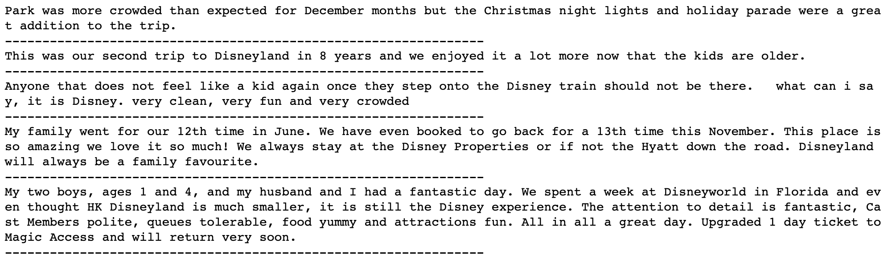
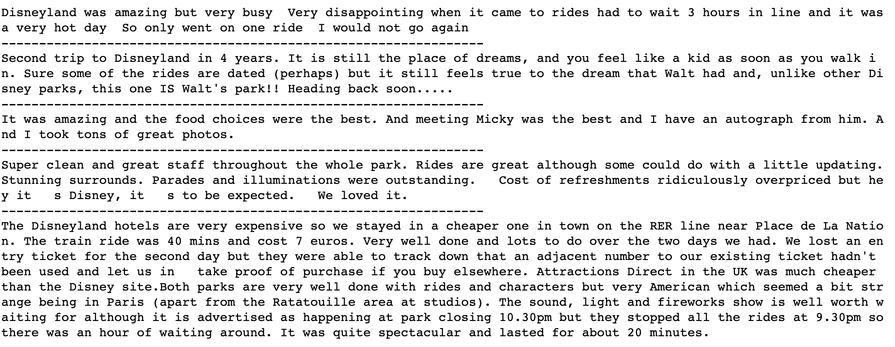

What is Sentiment Analysis?
In a nutshell, sentiment analysis is the process of detecting positive or negative sentiment in text. It’s often used by businesses to detect sentiment in social data and understand customers.
Why is Sentiment Analysis important?
Sentiment analysis is extremely important because it helps businesses quickly understand the overall opinions of their customers. Specifically, we will be exploring the sentiment of Disneyland guests.
Types of Sentiment Analysis
There are a number of sentiment analysis models such as feelings and emotions, urgency and polarity. For the purpose of this project, we will focus on polarity (positive, negative, neutral).
How Does Sentiment Analysis Work?
Sentiment analysis, otherwise known as opinion mining, works thanks to natural language processing (NLP) and machine learning algorithms, to automatically determine the emotional tone behind online conversations. The algorithms can be rule-based, automatic, or hybrid.
Sentiment Analysis Challenges
Sentiment analysis is one of the hardest tasks in natural language processing because even humans struggle to analyze sentiments accurately. Some of the main challenges are: Subjectivity and Tone, Context and Polarity, Irony and Sarcasm, Comparisons, and Defining Neutral.

Project Sypnosis
Disneyland is the most magical place on earth and thousands of people visit every year. In this study, we are looking to analyze visitors’ experience by looking at the reviews for 3 different parks Hong Kong, California, and Paris. Basically, the most common form of data used in business analytics is quantitative. However, numbers and star reviews do not give an accurate picture of the full experience visitors enjoy at Disney Parks. By analyzing text reviews, Disney Parks can learn more about their visitors and their needs and wants; and the metrics associated with good reviews. After all, qualitative data can inform action items better.
Exploratory Analysis
As part of our exploratory analysis, we looked at the rating distributions to see if the ratings align to the polarity score. From the charts below, we see that the polarity with the polarity score in that the vast majority of sentiment polarity scores are greater than zero, means most of them are pretty positive.
Select a Word
Word Cloud
Word clouds (also known as text clouds or tag clouds) work in a simple way: the more a specific word appears in a source of textual data (such as a speech, blog post, or database), the bigger and bolder it appears in the word cloud.
From the reviews in our dataset, we get a glimpse of what kind of words appear in our reviews. Most of the words are indeed related to the experience of the park visitors: magical, pricey, clean.
Sentiment Reviews
To begin our sentiment analysis, we use Vader, which is part of the NLTK moduel designed for sentiment analysis. Vader suses a lexicon of words to find which words are correlated with positives or negatives. It also takes into account the context of the sentences to determine the sentiment scores.
To preview whether the sentiment analysis works, we randomly selected 5 positive reviews and 5 negative reviews.
We see that that the analysis works! The positive reviews indeed correspond to some good feedbacks and the negative reviews correspond with the poor feedbacks.

5 Random Negative Reviews
